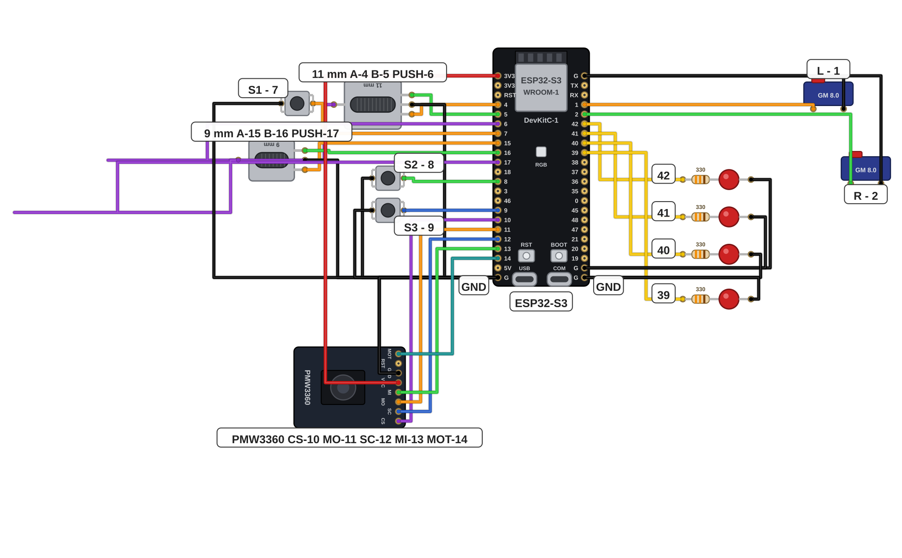

מעירים את העכבר, עוברים על טבלת בדיקה קצרה, מעלים את הסקיצה ההתחלתית של מסלול 2 ופוגשים את בלוק הכוונון — המספרים שהופכים את העכבר לשלכם בכרטיסיות הבאות.
העכבר שיצא ממסלול 1 כבר עובד: הסמן זז, הכפתורים לוחצים והגלגלות מגלגלות. המסלול הזה הופך אותו לעכבר שלכם. בשלב הזה מעירים אותו, בודקים שהכול חי ופוגשים את בלוק הכוונון — הרשימה של כל מה שאפשר להתאים.
במסלול 1 הסקיצות היו מוכנות מראש ורק העליתם אותן. במסלול 2 יש סקיצה אחת — T2_mouse_starter — שכל ההחלטות האישיות שלה מרוכזות בבלוק כוונון אחד בראש הקובץ. בכרטיסיות הבאות משנים בה עם קלוד קוד את המהירויות, הכפתורים והשם — עד שהעכבר מתאים בדיוק ליד שלכם.
הפירוט המלא של כל רכיב וכל חיבור נמצא בכרטיסי מסלול 1. אפשר לחזור אליהם בכל רגע.
מוודאים שהסוללה טעונה, מעבירים את המתג ל-ON ומתחברים מהמחשב אל P9-MOUSE בהגדרות ה-Bluetooth.
לד אדום על ה-TP4056 אומר שהסוללה עוד בטעינה; כחול או ירוק — הסוללה מלאה.
עוברים על טבלת הבדיקה שמתחת שורה אחרי שורה: מנסים כל דבר ביד ומסמנים ✓ לכל שורה שחיה.
הסמן — מזיזים את העכבר והסמן עוקב, גם על המשטח הרך.
הלחיצות — הלחיצה השמאלית והלחיצה הימנית עובדות.
הגלגלת הקדמית — מגלגלים ודף נגלל לשני הכיוונים; לחיצה על הגלגלת היא הלחיצה האמצעית.
גלגלת המהירות — סיבוב משנה את מהירות הסמן והלד שמאיר עובר איתו בין שלוש הרמות.
כפתורי הצד — שלושתם עונים בשכבת הבסיס: אחורה, קדימה ואמצעי.
השכבה — לחיצה על גלגלת המהירות מאירה את לד השכבה ולחיצה נוספת מכבה אותו.
כל השורות מסומנות? העכבר כולו חי — ממשיכים.

פותחים את קלוד קוד בתיקיית הפרויקט, פותחים את הסקיצה T2_mouse_starter ומעלים אותה פעם אחת דרך כבל ה-USB — בדיוק כמו שהיא, בלי לשנות שום דבר.
הסקיצה הזאת מתנהגת בדיוק כמו הסקיצה משלב 11 של מסלול 1 — העכבר ממשיך לעבוד כרגיל.
מגלגלים לראש הסקיצה אל האזור שמסומן TUNING BLOCK וקוראים אותו יחד עם קלוד קוד שורה אחרי שורה. מה כל שורה משנה — מיד מתחת.
כל מה שמותר לשנות בסקיצה גר בבלוק הזה:
MOUSE_NAMEהשם שהמחשב רואה כשמתחברים. עכשיו: P9-MOUSE.CPI_LEVELSשלוש רמות המהירות שגלגלת המהירות עוברת ביניהן. עכשיו: 400, 800, 1600.START_LEVELבאיזו רמה העכבר מתעורר: 0 הכי איטית ו-2 הכי מהירה. עכשיו: 1.INVERT_X / INVERT_Ytrue הופך את כיוון התנועה — ימין-שמאל או מעלה-מטה. עכשיו שניהם false.BED_MODEtrue מוסיף החלקה לתנועה על משטח רך כמו מזרן. עכשיו: false.S1_BASE / S2_BASE / S3_BASEמה כל כפתור צד עושה בשכבת הבסיס. עכשיו: MOUSE_BACK, MOUSE_FORWARD ו-MOUSE_MIDDLE — אחורה, קדימה ואמצעי.DEBOUNCE_MSכמה מילישניות לחיצה צריכה להיות יציבה כדי להיספר. מעלים אם לחיצות נספרות פעמיים. עכשיו: 8.בוחרים שתי שורות מבלוק הכוונון ואומרים בקול — לקלוד קוד או למורה — מה כל אחת מהן משנה בעכבר.
בכרטיסיות הבאות משנים את המספרים האלה עד שהעכבר מתאים בדיוק ליד שלכם.
העכבר עובד בדיוק כמו בסוף מסלול 1 — סמן, לחיצות, גלילה ושתי הגלגלות — והסקיצה T2_mouse_starter פתוחה בקלוד קוד עם בלוק הכוונון על המסך.
שום התנהגות עוד לא השתנתה — השינוי הראשון קורה בכרטיסייה הבאה.
בפרויקט הזה שני דברים דורשים כבוד — המלחם והסוללה. מלחימים רק כשהמורה ליד ולא נוגעים בקצה המתכת של המלחם — והסוללה נכנסת למחזיק רק אחרי שהמורה בדק את הכיוון שלה. סוללה חמה, נפוחה או פגועה עוברת למורה מיד. כל הכללים בכרטיסיית R1.